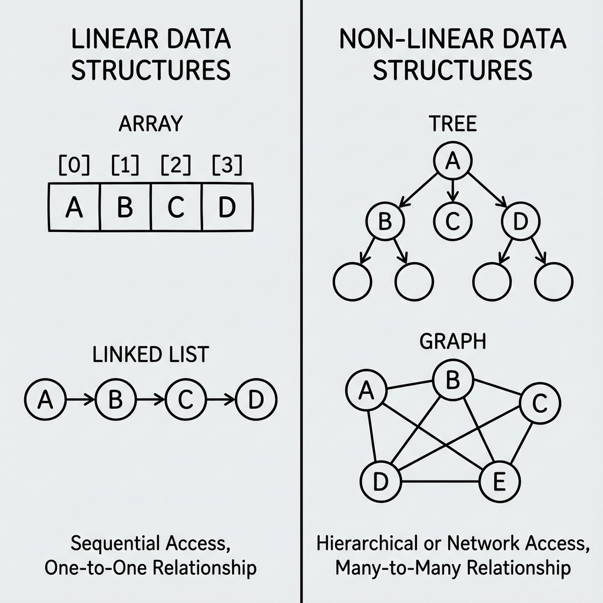

Master the fundamental building blocks of computer science.
Data Structures and Algorithms (DSA) is the core of computer science. It deals with how data is organized, stored, and processed efficiently. Understanding DSA is crucial for writing optimized code and solving complex computational problems.
Arrays are the simplest data structure, storing elements in contiguous memory locations. Strings are sequences of characters. Mastering these involves understanding memory management, indexing, and common algorithms like sliding window and two-pointer techniques.
A linked list is a linear data structure where elements are stored in nodes, and each node points to the next one. Unlike arrays, they do not require contiguous memory.
Stacks follow the LIFO (Last In First Out) principle, while Queues follow FIFO (First In First Out). These are essential for managing function calls, expression evaluation, and scheduling tasks.
Non-linear data structures that represent hierarchical (Trees) and networked (Graphs) relationships. Key concepts include Binary Search Trees (BST), AVL Trees, Heaps, BFS, and DFS.
A method for solving complex problems by breaking them down into simpler subproblems. It is used in optimization problems like the Knapsack problem, Fibonacci sequence, and shortest path algorithms.